Home
Food
Events
Hong Kong Island East
Kowloon East
Yau Tsim Mong
Central Western
About Me
Kowloon East
Explore the great neighborhood of Kowloon East including Choi Hung and Wong Tai Sin!
Wong Tai Sin
Choi Hung
Kwun Tong
Wong Tai Sin
Wong Tai Sin Temple
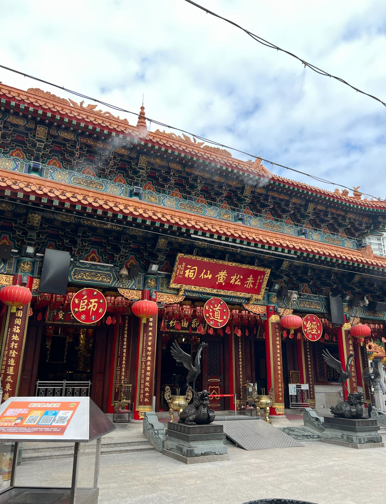
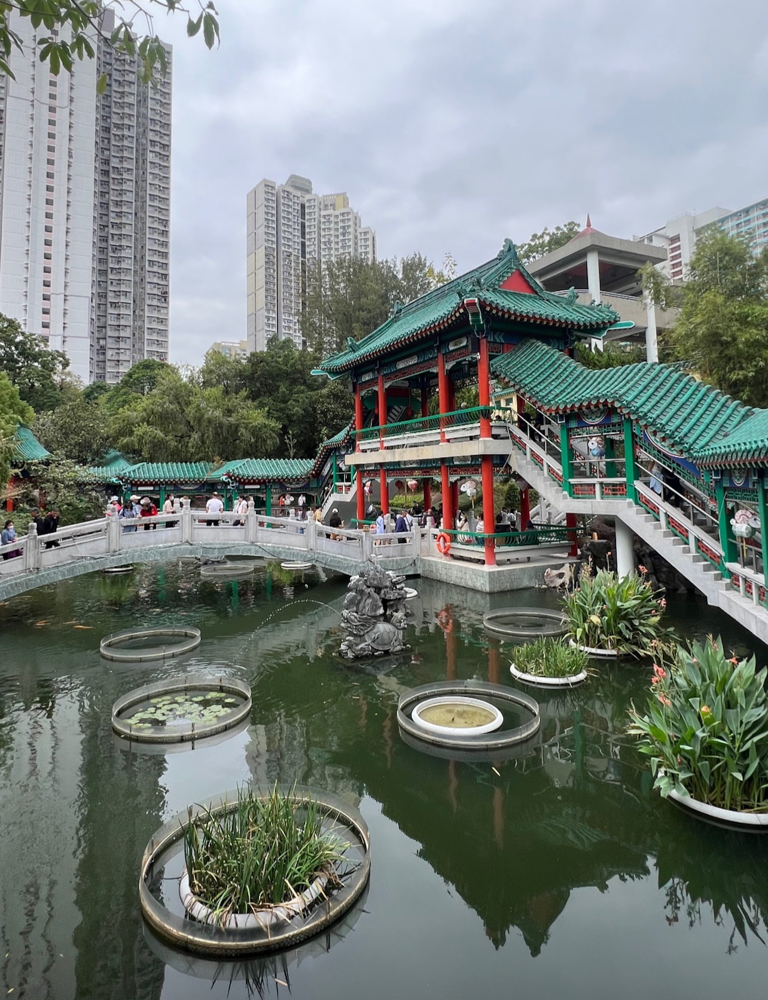
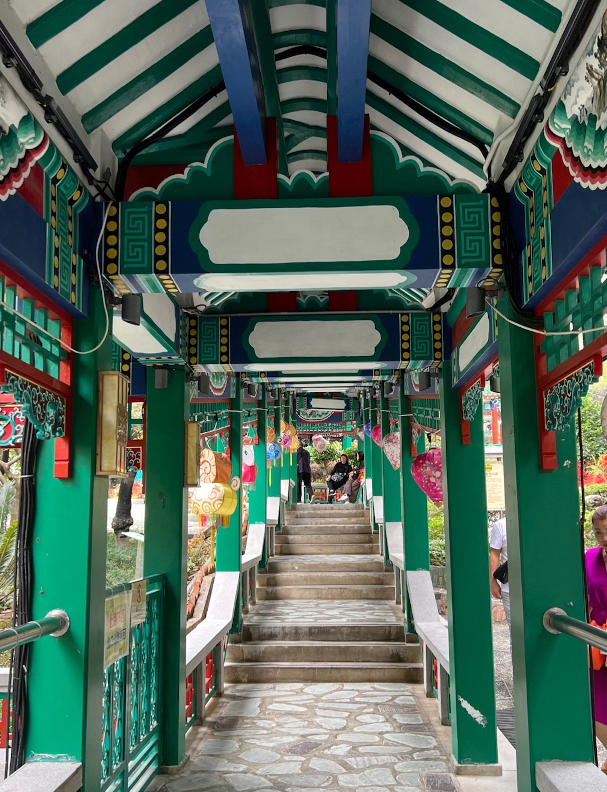
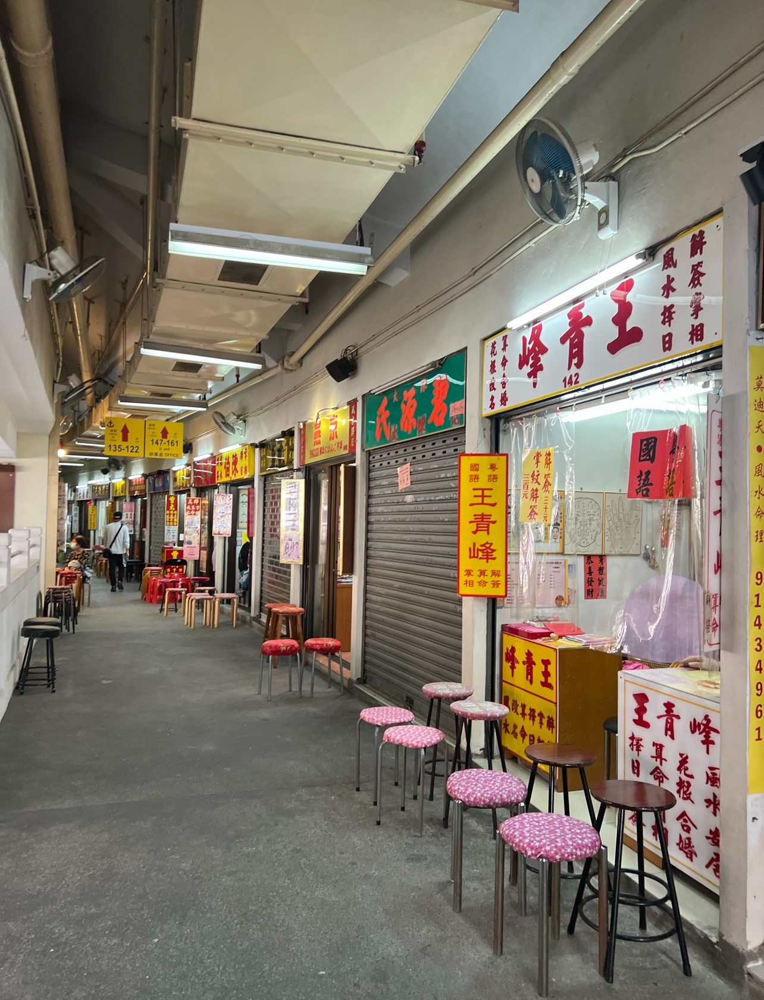
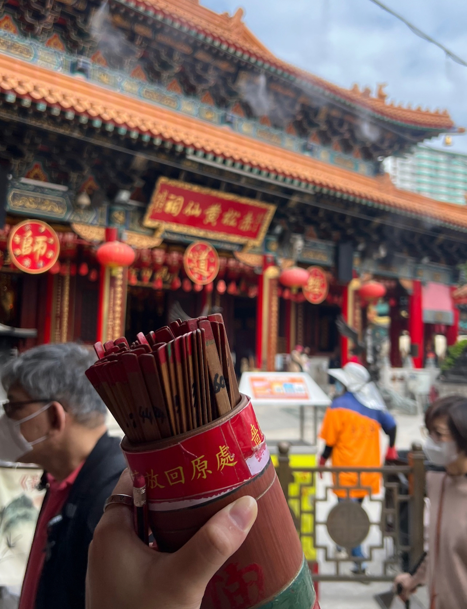
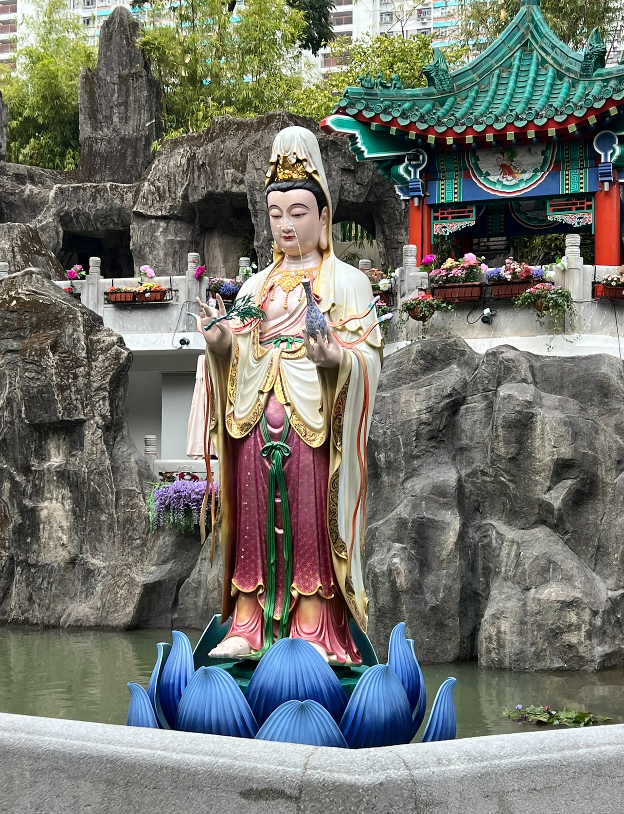
Choi Hung
Choi Hung Estate
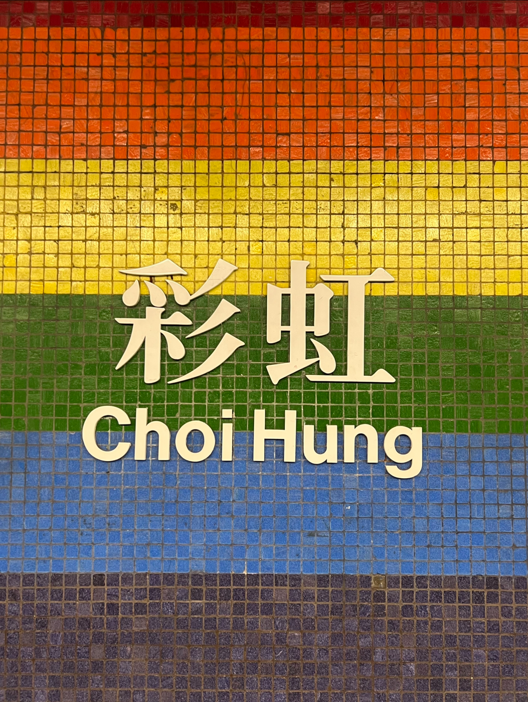
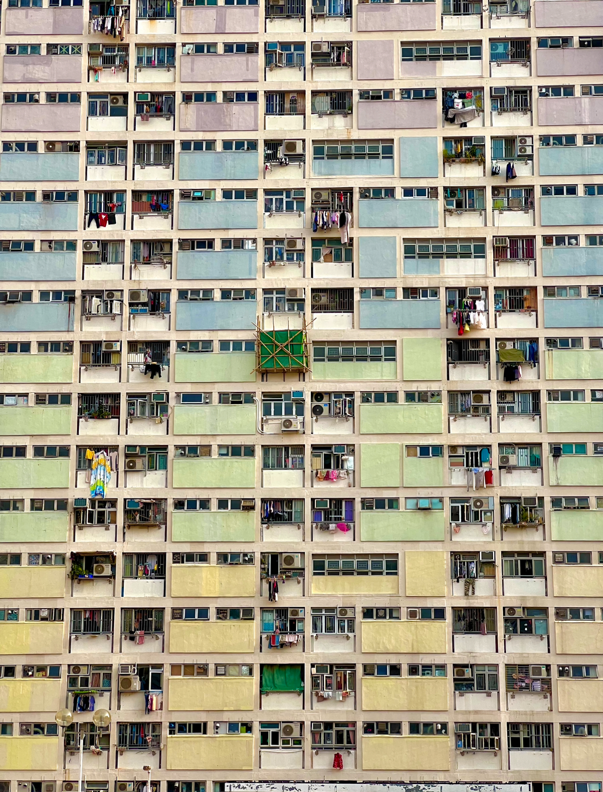
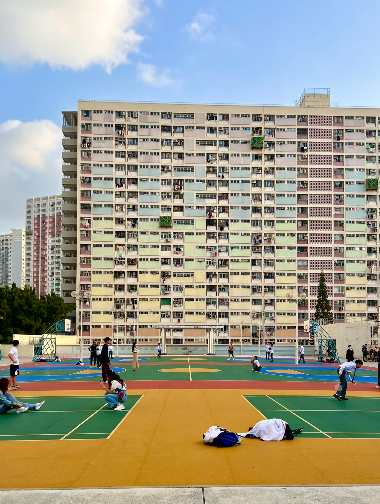
Kwun Tong
Tsun Yip Street Market
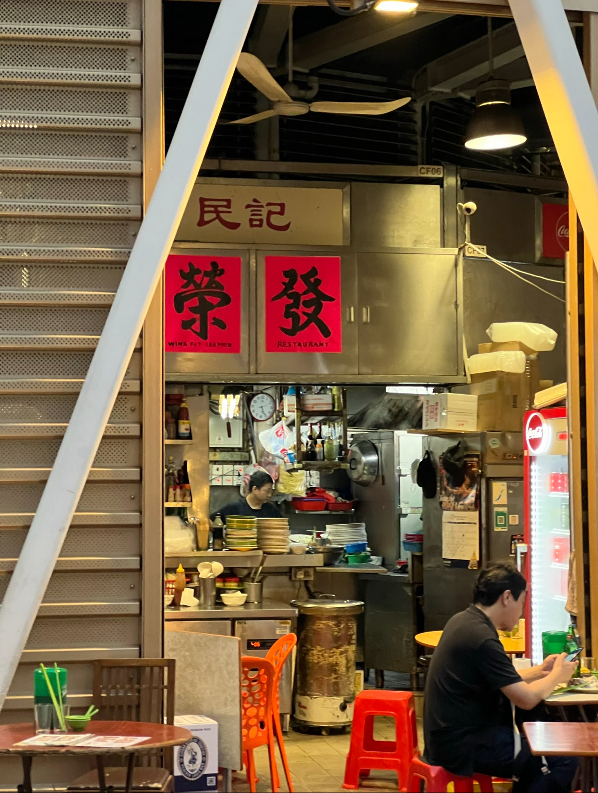
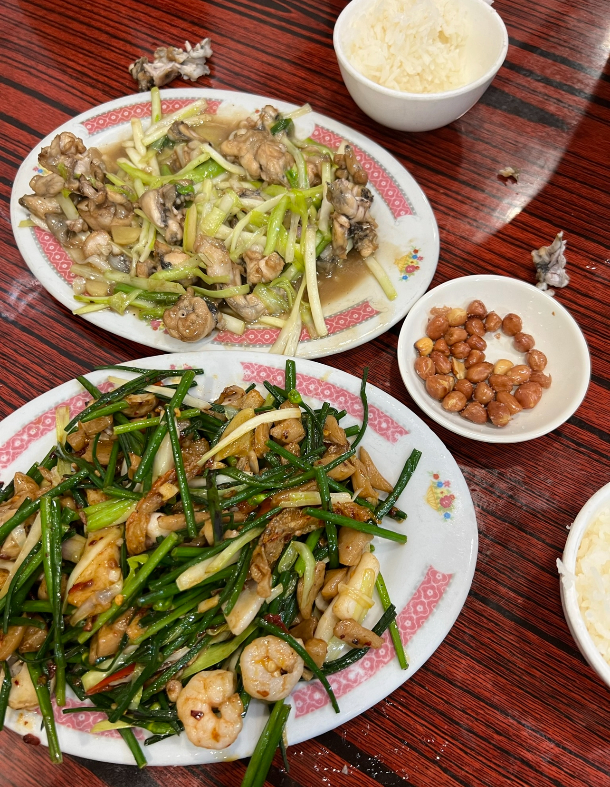
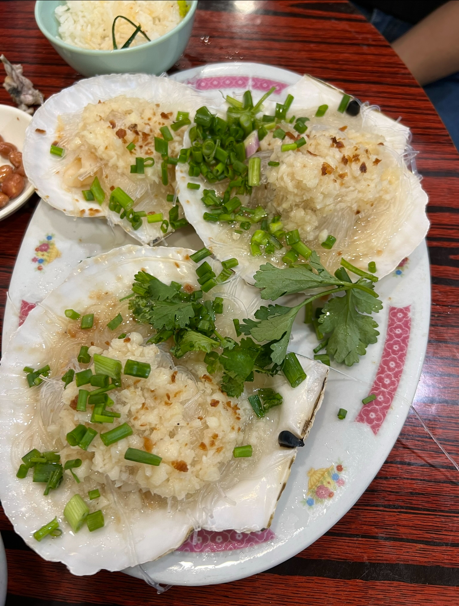